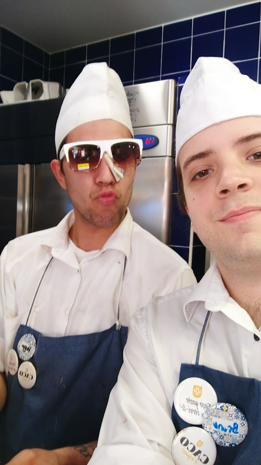
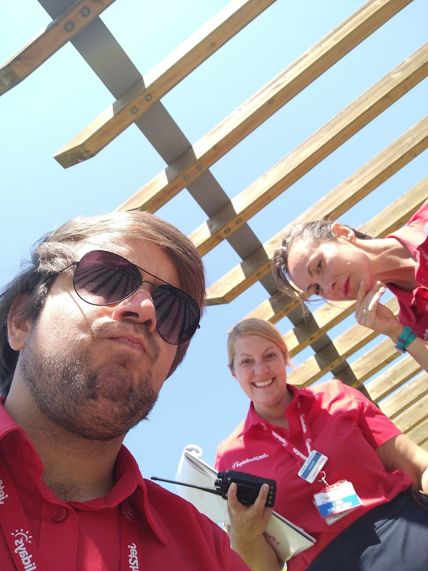
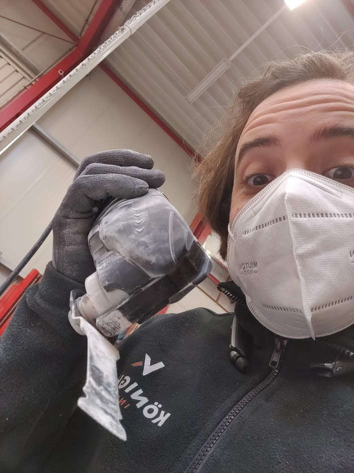
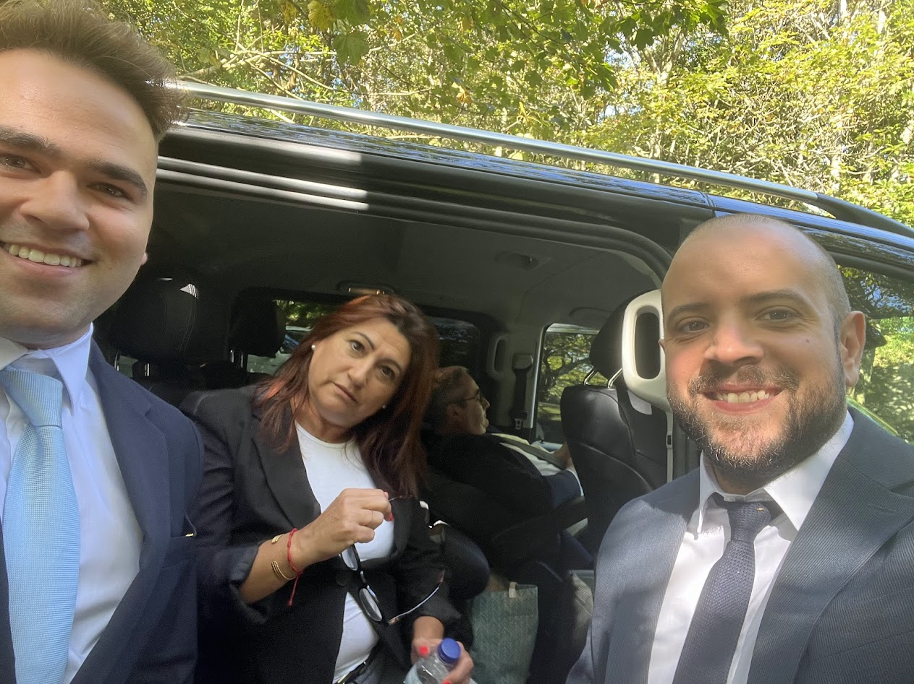

Sobre mim
Sou o Bruno Diniz e estou atualmente a dar uma viragem na minha carreira para a área de desenvolvimento, através do curso de Tecnologias e Programação de Sistemas de Informação (TPSI).
O meu percurso não foi linear — e ainda bem. Já passei por várias áreas, desde restauração até operações em ambiente aeroportuário internacional e trabalho industrial na Alemanha… e sim, pelo meio até já fiz trabalhos como agente funerário. Outros quinhentos.


Essa variedade deu-me algo que considero uma grande vantagem: adaptação rápida a novos contextos e zero medo de sair da zona de conforto.
Trabalhei com pessoas, equipas, clientes exigentes e situações onde era preciso resolver problemas no momento — sem margem para bloqueios. Hoje aplico essa mesma mentalidade na programação: perceber, testar, errar, ajustar e seguir em frente.


Atualmente estou focado em consolidar bases em desenvolvimento e a construir projetos que reflitam a minha evolução. Ainda estou no início desta jornada, mas com a certeza de que a consistência e a capacidade de aprender rapidamente fazem toda a diferença.
E sim — trago comigo experiência do “mundo real”. Porque escrever código é importante, mas saber lidar com desafios fora do ecrã também conta (e bastante).